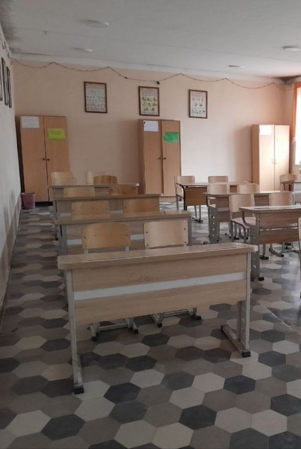

Bu mening maktabim
Bu bizning sinf
Maktabimiz haqida
Maktabimiz ???-yilda tashkil topgan bo‘lib, hozirgi kunda 1–11-sinflarda 800 dan ortiq o‘quvchi tahsil olmoqda. O‘quv maskani zamonaviy texnologiyalar, qulay o‘quv xonalari, kutubxona, sport zallari va kompyuter laboratoriyalari bilan jihozlangan.
Maktabda 50 dan ortiq yuqori malakali ustozlar faoliyat yuritib, har bir o‘quvchining bilim olishi va rivojlanishi uchun samarali sharoit yaratilgan. Pedagoglar o‘z fanlari bo‘yicha zamonaviy usullardan foydalangan holda dars olib boradilar.
Maktabimizda turli to‘garaklar va klublar faoliyat olib boradi: ingliz tili, sport, matematika, musiqa va boshqalar. Har yili o‘quvchilarimiz xalqaro va respublika miqyosidagi olimpiada va tanlovlarda sovrinli o‘rinlarni egallab kelmoqda.
“Al-Xorazmiy vorislari” loyihasi doirasida maktabimiz o‘quvchilari bir nechta innovatsion loyihalarni ishlab chiqib, viloyat va respublika bosqichlarida faol qatnashmoqdalar.